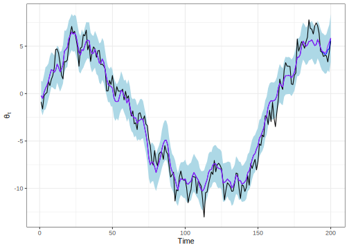

4.3 Particle filtering
Now, we consider the scenario where we need to sample from a posterior distribution whose dimension increases over time, \(\pi(\boldsymbol{\theta}_{0:t}\mid \boldsymbol{y}_{0:t})\), for \(t = 0, 1, \dots\). The challenge arises from the fact that, even if this posterior distribution is known, the computational complexity of implementing a sampling scheme in this context increases linearly with \(t\).
This makes MCMC methods, which operate in batch mode and require a complete re-run whenever new information becomes available, less optimal. Consequently, we present sequential algorithms, which operate incrementally as new data becomes available, and are often a better alternative. These algorithms are typically faster and are well-suited for scenarios requiring real-time updates, commonly referred to as online mode.
Specifically, we consider the dynamic system in the state-space representation. This is a system where there is an unobservable state vector \(\boldsymbol{\theta}_t\in\mathbb{R}^K\), and an observed variable \(\boldsymbol{Y}_t\), \(t=0,1,\dots\) such that:
\(\boldsymbol{\theta}_t\) is a Markov process, that is,
\[ \pi(\boldsymbol{\theta}_{t}\mid \boldsymbol{\theta}_{1:t-1})=\pi(\boldsymbol{\theta}_{t}\mid \boldsymbol{\theta}_{t-1}), \] for \(t=1,2,\dots\). All the relevant information to define \(\boldsymbol{\theta}_{t}\) is in \(\boldsymbol{\theta}_{t-1}\).24\(\boldsymbol{Y}_t\perp \boldsymbol{Y}_s\mid \boldsymbol{\theta}_{t}\), for \(s<t\). That is, there is independence between observable variables regarding their history conditional on the actual state vector.
We can see in the next figure a graphical representation of the dynamic system.
Formally,
\[ \begin{aligned} \boldsymbol{\theta}_t &= h(\boldsymbol{\theta}_{t-1}, \boldsymbol{w}_t) & \text{(State equations)}\\ Y_t & = f(\boldsymbol{\theta}_t, \mu_t)& \text{(Observation equation)}, \end{aligned} \]
where \(\boldsymbol{w}_t\) and \(\mu_t\) are stochastic errors such that their probability distributions define the transition density \(\pi(\boldsymbol{\theta}_t\mid \boldsymbol{\theta}_{t-1})\) and observation density \(p(Y_t\mid \boldsymbol{\theta}_t)\).
We present particle filtering, a specific case of sequential Monte Carlo (SMC), which is one of the most commonly used algorithms for scenarios requiring sequential updates of the posterior distribution as described by the state-space model.
The starting point is sequential importance sampling (SIS), originally proposed by Handschin and Mayne (1969), which is a modification of IS to compute an estimate of \(\pi(\boldsymbol{\theta}_{0:t}\mid \boldsymbol{y}_{0:t})\) without altering the past trajectories \(\left\{\boldsymbol{\theta}^{(s)}_{1:t-1}, s=1,2,\dots,S\right\}\). The key idea is to use a proposal density that takes the form
\[ \begin{aligned} q(\boldsymbol{\theta}_{0:t}\mid \boldsymbol{y}_{0:t}) &= q(\boldsymbol{\theta}_{0:t-1}\mid \boldsymbol{y}_{1:t-1})q(\boldsymbol{\theta}_t\mid \boldsymbol{\theta}_{t-1},\boldsymbol{y}_{t}) \\ &= q(\boldsymbol{\theta}_0)\prod_{h=1}^{t}q(\boldsymbol{\theta}_h\mid \boldsymbol{\theta}_{h-1},\boldsymbol{y}_{h}). \end{aligned} \]
This proposal density allows calculating the weights sequentially,
\[ \begin{aligned} w_{t}(\boldsymbol{\theta}^{(s)}_{0:t})&=\frac{\pi(\boldsymbol{\theta}_{0:t}^{(s)}\mid \boldsymbol{y}_{0:t})}{q(\boldsymbol{\theta}_{0:t}^{(s)}\mid \boldsymbol{y}_{0:t})}\\ &=\frac{p(\boldsymbol{y}_{0:t}\mid \boldsymbol{\theta}_{0:t}^{(s)})\pi(\boldsymbol{\theta}_{0:t}^{(s)})}{p(\boldsymbol{y}_{0:t})q(\boldsymbol{\theta}_{0:t}^{(s)}\mid \boldsymbol{y}_{0:t})}\\ &=\frac{p(\boldsymbol{y}_{t}\mid \boldsymbol{\theta}_{t}^{(s)})p(\boldsymbol{y}_{1:t-1}\mid \boldsymbol{\theta}_{0:t-1}^{(s)})\pi(\boldsymbol{\theta}_{t}^{(s)}\mid \boldsymbol{\theta}_{t-1}^{(s)})\pi(\boldsymbol{\theta}_{0:t-1}^{(s)})}{p(\boldsymbol{y}_{0:t})q(\boldsymbol{\theta}_{t}^{(s)}\mid \boldsymbol{\theta}_{t-1},\boldsymbol{y}_{t}^{(s)})q(\boldsymbol{\theta}_{0:t-1}^{(s)}\mid \boldsymbol{y}_{1:t-1})}\\ &\propto w_{t-1}^*(\boldsymbol{\theta}^{(s)}_{0:t-1})\frac{p(\boldsymbol{y}_{t}\mid \boldsymbol{\theta}_{t}^{(s)})\pi(\boldsymbol{\theta}_{t}\mid \boldsymbol{\theta}_{t-1}^{(s)})}{q(\boldsymbol{\theta}_t^{(s)}\mid \boldsymbol{\theta}_{t-1}^{(s)},\boldsymbol{y}_{t})}. \end{aligned} \]
Take into account that \(p(\boldsymbol{y}_{0:t})\) does not depend on \(\boldsymbol{\theta}^{(s)}_{0:t}\). The term \(\alpha_t(\boldsymbol{\theta}_{0:t}^{(s)})=\frac{p(\boldsymbol{y}_{t}\mid \boldsymbol{\theta}_{t}^{(s)})\pi(\boldsymbol{\theta}_{t}\mid \boldsymbol{\theta}_{t-1}^{(s)})}{q(\boldsymbol{\theta}_t^{(s)}\mid \boldsymbol{\theta}_{t-1}^{(s)},\boldsymbol{y}_{t})}\) is called the incremental importance weight, and implies that
\[ w_t(\boldsymbol{\theta}^{s}_{0:t})=w_0(\boldsymbol{\theta}^{s}_{0})\prod_{h=1}^{t}\alpha_h(\boldsymbol{\theta}_{1:h}^{(s)}). \]
This algorithm possesses the desirable property of maintaining fixed computational complexity. Consequently, we sequentially obtain draws \(\boldsymbol{\theta}_t^{(s)}\), referred to as particles: \(\boldsymbol{\theta}_0^{(s)}\) is drawn from \(q(\boldsymbol{\theta}_0)\) at \(t=0\), and subsequently, \(\boldsymbol{\theta}_h^{(s)}\) is drawn from \(q(\boldsymbol{\theta}_h\mid \boldsymbol{\theta}_{h-1},\boldsymbol{y}_{h})\) at \(t=h\) (Doucet, De Freitas, and Gordon 2001; Olivier Cappé, Godsill, and Moulines 2007).
A relevant case is when the proposal distribution takes the form of the prior distribution, that is,
\[ q(\boldsymbol{\theta}_{0:t}\mid \boldsymbol{y}_{0:t}) = \pi(\boldsymbol{\theta}_{0:t}) = \pi(\boldsymbol{\theta}_0)\prod_{h=1}^{t}\pi(\boldsymbol{\theta}_h\mid \boldsymbol{\theta}_{h-1}). \]
This implies that
\[ w_{t}(\boldsymbol{\theta}^{(s)}_{0:t})\propto w_{t-1}^*(\boldsymbol{\theta}^{(s)}_{0:t-1})p(\boldsymbol{y}_{t}\mid \boldsymbol{\theta}_{t}^{(s)}), \]
which means that the incremental importance weight is given by \(p(\boldsymbol{y}_{t}\mid \boldsymbol{\theta}_{t}^{(s)})\).
Algorithm 4 shows how to perform SIS (Olivier Cappé, Godsill, and Moulines 2007). We set \(w_t^{(s)}:=w_t(\boldsymbol{\theta}_{0:t}^{(s)})\) to simplify notation.
For s=1,2,...,S do
Sample θ0(s) from q(θ0|y0)
Calculate the importance weights w0(s) ∝(p(y0|θ0(s))π(θ0(s)))/q(θ0(s)|y0)
End for
for t=1,2,...,T do
for s=1,2,...,S do
Draw particles θt(s) from qt(θt|θt-1,y0)
Compute the weights
wt(s) ∝ wt-1*(s) (p(yt|θt(s))π(θt(s)|θt-1(s)))/q(θt(s)|θt-1(s),yt)
End for
Standardize the weights wt*(s) = wt(s)/(∑hwt(h)), s=1,2,...,S
End for
Example: Dynamic linear model
Let’s assume that the state-space representation is
\[
\theta_t = \theta_{t-1} + w_t \quad \text{(State equation)} \\
Y_t = \phi \theta_t + \mu_t \quad \text{(Observation equation)},
\]
where \(w_t \sim N(0, \sigma_w^2)\) and \(\mu_t \sim N(0, \sigma_{\mu}^2)\), \(t = 1, 2, \dots, 50\). In addition, we use the proposal distribution \(q(\theta_t \mid y_t) = \pi(\theta_t)\), which is normal with mean \(\theta_{t-1}\) and variance \(\sigma_w^2\). Then, the weights are given by the recursion
\[
w_t^{(s)} \propto w_{t-1}^{*(s)} p(y_t \mid \theta_t, \sigma_{\mu}^2),
\]
where \(p(y_t \mid \theta_t, \sigma_{\mu}^2)\) is \(N(\phi \theta_t, \sigma_{\mu}^2)\).
We can compute the mean and standard deviation of the state at each \(t\) using
\[
\hat{\theta}_t = \sum_{s=1}^S w_t^{*(s)} \theta_t^{(s)}
\]
and
\[
\hat{\sigma}_{\theta} = \left(\sum_{s=1}^S w_t^{*(s)} \theta_t^{2(s)} - \hat{\theta}_t^2\right)^{1/2}.
\]
The following code demonstrates the implementation of this algorithm, setting \(\sigma_w^2 = \sigma_{\mu}^2 = 1\) and \(\phi = 0.5\). First, we simulate the process, and then we implement the SIS algorithm.
rm(list = ls()); set.seed(010101)
S <- 50000 # Number of particles
sigma_w <- 1 # State noise
sigma_mu <- 1 # Observation noise
phi <- 0.5 # Coefficient in observation equation
T <- 50 # Sample size
# Simulate true states and observations
theta_true <- numeric(T); y_obs <- numeric(T)
theta_true[1] <- rnorm(1, mean = 0, sd = sigma_w) # Initial state
for (t in 2:T) {
theta_true[t] <- rnorm(1, mean = theta_true[t-1], sd = sigma_w)
}
y_obs <- rnorm(T, mean = phi*theta_true, sd = sigma_mu)
# Sequential Importance Sampling (SIS)
particles <- matrix(0, nrow = S, ncol = T)
weights <- matrix(0, nrow = S, ncol = T)
weightsSt <- matrix(0, nrow = S, ncol = T)
# Initialization
particles[, 1] <- rnorm(S, mean = 0, sd = sigma_w) # Sample initial particles
weights[, 1] <- dnorm(y_obs[1], mean = phi*particles[, 1], sd = sigma_mu) # Importance weights
weightsSt[, 1] <- weights[, 1] / sum(weights[, 1]) # Standardized weights
# Sequential updating
for (t in 2:T) {
# Propagate particles
particles[, t] <- rnorm(S, mean = particles[, t-1], sd = sigma_w)
# Compute weights
weights[, t] <- weightsSt[, t-1] * dnorm(y_obs[t], mean = phi*particles[, t], sd = sigma_mu) # Recursive weight update
weightsSt[, t] <- weights[, t] / sum(weights[, t]) # Normalize weights
}
# Estimate the states (weighted mean)
FilterDist <- colSums(particles * weightsSt)
SDFilterDist <- (colSums(particles^2 * weightsSt) - FilterDist^2)^0.5
library(dplyr); library(ggplot2); library(latex2exp)
ggplot2::theme_set(theme_bw())
df <- tibble(t = 1:T, mean = FilterDist, lower = FilterDist - 2*SDFilterDist, upper = FilterDist + 2*SDFilterDist, theta_true = theta_true)
# Function to plot
plot_filtering_estimates <- function(df) {
p <- ggplot(data = df, aes(x = t)) + geom_ribbon(aes(ymin = lower, ymax = upper), alpha = 1, fill = "lightblue") + geom_line(aes(y = theta_true), colour = "black", alpha = 1, linewidth = 0.5) + geom_line(aes(y = mean), colour = "blue", linewidth = 0.5) + ylab(TeX("$\\theta_{t}$")) + xlab("Time")
print(p)
}
plot_filtering_estimates(df)The figure shows the trajectory of the true state vector (black line), the posterior mean (blue line), and the area defined by \(\pm2\hat{\sigma}_{\theta}\) (light blue shaded area).
Sequential importance sampling is effective for sampling from the posterior distribution in the short term. However, it is important to note that SIS is a particular case of IS and, consequently, inherits the drawbacks of importance sampling. In particular, the variance of the weights increases exponentially with \(t\) (Kong, Liu, and Wong 1994). This implies that, as \(t\) increases, the importance weights tend to degenerate in the long run; that is, all probability mass concentrates on a few weights, a phenomenon known as sample impoverishment or weight degeneracy. This is because it is impossible to accurately represent a distribution on a space of arbitrarily high dimension with a sample of fixed, finite size. This phenomenon can be observed, for instance, in the dynamic linear model example, where the highest standardized weight at \(t = 50\) is 53%, and 7 out of 50,000 particles account for 87% of the total probability.
Given that, in practice, we are often interested in lower-dimensional marginal distributions, ideas from sampling/importance resampling can be employed. This strategy avoids the accumulation of errors due to resetting the system, although resampling introduces some additional Monte Carlo variation. Gordon, Salmond, and Smith (1993) proposed the Bootstrap filter, where, at each time step, resampling is performed by drawing \(S\) particles from the current set using the standardized weights as probabilities of selection. This ensures that particles with small weights have a low probability of being selected. After resampling, the standardized weights are set equal to \(1/S\). Note that the Bootstrap filter involves multiple iterations of the SIR algorithm, which implies that the resampled trajectories are no longer independent. This multinomial resampling provides an unbiased approximation to the posterior distribution obtained by SIS (Doucet, Johansen, et al. 2009).
Algorithm 5 shows how to perform the particle filter. We set \(w_t^{(s)} := w_t(\boldsymbol{\theta}_{0:t}^{(s)})\) to simplify notation (Doucet, Johansen, et al. 2009).
For s=1,2,...,S do
Sample θ0(s) from q(θ0|y0)
Calculate the importance weights w0(s) ∝(p(y0|θ0(s))π(θ0(s)))/q(θ0(s)|y0)
End for
Standardize the weights w0*(s) = w0(s)/(∑hw0(h)), s=1,2,...,S
Select S particle from {θ0(s),w0*(s)} to obtain {θ0r(s),1/S}
for t=1,2,...,T do
for s=1,2,...,S do
Draw particles θt(s) from qt(θt|θt-1,y0)
Set θ1:t(s) ← (θ1:t-1r(s), θt(s))
Compute the weights
αt(s) = (p(yt|θt(s))π(θt(s)|θt-1(s)))/q(θt(s)|θt-1(s),yt)
End for
Standardize the weights wt*(s) = wt(s)/(∑hwt(h)), s=1,2,...,S
Select S particle from {θ1:t(s),wt*(s)} to obtain {θ1:tr(s),1/S}
End for
Example: Dynamic linear model continues
If we apply the SIS algorithm to the dynamic linear model with a sample size of 200, the algorithm’s performance deteriorates as \(t\) increases. This is due to particle degeneration; at \(t=200\), a single particle holds a weight close to 100%.
Let’s perform particle filtering in this example. The following code illustrate the procedure. The figure shows the performance of particle filtering in this example. There is the true state vector (black line), the means based on \(\left\{\boldsymbol{\theta}_{1:t}^{(s)},w_t^{*(s)}\right\}\) (blue line) and \(\left\{\boldsymbol{\theta}_{1:t}^{r(s)},1/S\right\}\) (purple line), and the area defined by \(\pm2\hat{\sigma}_{\theta}\) based on the former (light blue shaded area). Note that the particle filtering algorithm has better performance than the SIS algorithm.
rm(list = ls()); set.seed(010101)
S <- 50000 # Number of particles
sigma_w <- 1; sigma_mu <- 1 # # State and observation noises
phi <- 0.5 # Coefficient in observation equation
T <- 200 # Sample size
# Simulate true states and observations
theta_true <- numeric(T); y_obs <- numeric(T)
theta_true[1] <- rnorm(1, mean = 0, sd = sigma_w)
for (t in 2:T) {
theta_true[t] <- rnorm(1, mean = theta_true[t-1], sd = sigma_w)
}
y_obs <- rnorm(T, mean = phi*theta_true, sd = sigma_mu)
# Particle filtering
particles <- matrix(0, nrow = S, ncol = T) # Store particles
particlesT <- matrix(0, nrow = S, ncol = T) # Store resampling particles
weights <- matrix(0, nrow = S, ncol = T) # Store weights
weightsSt <- matrix(0, nrow = S, ncol = T) # Store standardized weights
weightsSTT <- matrix(1/S, nrow = S, ncol = T) # Store standardized weights
logalphas <- matrix(0, nrow = S, ncol = T) # Store log incremental weights
particles[, 1] <- rnorm(S, mean = 0, sd = sigma_w)
weights[, 1] <- dnorm(y_obs[1], mean = phi*particles[, 1], sd = sigma_mu) # Importance weights
weightsSt[, 1] <- weights[, 1] / sum(weights[, 1]) # Normalize weights
ind <- sample(1:S, size = S, replace = TRUE, prob = weightsSt[, 1]) # Resample
particles[, 1] <- particles[ind, 1] # Resampled particles
particlesT[, 1] <- particles[, 1] # Resampled particles
# Sequential updating
pb <- winProgressBar(title = "progress bar", min = 0, max = T, width = 300)
for (t in 2:T) {
particles[, t] <- rnorm(S, mean = particles[, t-1], sd = sigma_w)
logalphas[, t] <- dnorm(y_obs[t], mean = phi*particles[, t], sd = sigma_mu, log = TRUE)
weights[, t] <- exp(logalphas[, t])
weightsSt[, t] <- weights[, t] / sum(weights[, t])
if(t < T){
ind <- sample(1:S, size = S, replace = TRUE, prob = weightsSt[, t])
particles[, 1:t] <- particles[ind, 1:t]
}else{
ind <- sample(1:S, size = S, replace = TRUE, prob = weightsSt[, t])
particlesT[, 1:t] <- particles[ind, 1:t]
}
setWinProgressBar(pb, t, title=paste( round(t/T*100, 0), "% done"))
}
close(pb)## NULLFilterDist <- colSums(particles * weightsSt)
SDFilterDist <- (colSums(particles^2 * weightsSt) - FilterDist^2)^0.5
FilterDistT <- colSums(particlesT * weightsSTT)
SDFilterDistT <- (colSums(particlesT^2 * weightsSTT) - FilterDistT^2)^0.5
MargLik <- colMeans(weights)
plot(MargLik, type = "l")library(dplyr)
library(ggplot2)
require(latex2exp)
ggplot2::theme_set(theme_bw())
df <- tibble(t = 1:T, mean = FilterDist, lower = FilterDist - 2*SDFilterDist, upper = FilterDist+ 2*SDFilterDist, meanT = FilterDistT, lowerT = FilterDistT - 2*SDFilterDistT,
upperT = FilterDistT + 2*SDFilterDistT, x_true = theta_true)
plot_filtering_estimates <- function(df) {
p <- ggplot(data = df, aes(x = t)) + geom_ribbon(aes(ymin = lower, ymax = upper), alpha = 1, fill = "lightblue") + geom_line(aes(y = x_true), colour = "black", alpha = 1, linewidth = 0.5) + geom_line(aes(y = mean), colour = "blue", linewidth = 0.5) +
geom_line(aes(y = meanT), colour = "purple", linewidth = 0.5) + ylab(TeX("$\\theta_{t}$")) + xlab("Time")
print(p)
}
plot_filtering_estimates(df)
Algorithm 5 performs resampling at every time step. However, it is common to perform resampling only when the effective sample size of the particles (\(ESS = (\sum_{s=1}^S (w_t^{*(s)})^{2})^{-1}\)) falls below a specific threshold, such as 50% of the initial number of particles. Note that when \(w_t^{*(s)} = 1/S\), the effective sample size is \(S\), the total number of particles. Additionally, we should use \(\left\{\boldsymbol{\theta}_{1:t}^{(s)}, w_t^{*(s)}\right\}\) to estimate the posterior distribution, as it results in lower Monte Carlo error compared to calculations based on \(\left\{\boldsymbol{\theta}_{1:t}^{r(s)}, 1/S\right\}\) (Olivier Cappé, Godsill, and Moulines 2007). Finally, an estimate of the marginal likelihood can be obtained using
\[
\hat{p}(y_t) = \frac{1}{S}\sum_{s=1}^S w_t^{(s)}.
\]
Particle filtering offers several advantages, such as being quick and easy to implement, its modularity—allowing one to simply adjust the expressions for the importance distribution and weights when changing the problem—and its suitability for parallel algorithms. Moreover, it enables straightforward sequential inference for very complex models.
However, there are also disadvantages. The resampling step introduces extra Monte Carlo variability. Using the state transition (prior) density as the importance distribution often leads to poor performance, manifested in a lack of robustness with respect to the observed sequence. For instance, performance deteriorates when outliers occur in the data or when the variance of the observation noise is small. Furthermore, the procedure is not well suited for sampling from \(\pi(\boldsymbol{\theta}_{0:t} \mid y_{1:t})\) because most particles originate from the same ancestor.
Alternative resampling approaches, such as residual resampling (Liu and Chen 1995) and systematic resampling (J. Carpenter, Clifford, and Fearnhead 1999), preserve unbiasedness while reducing variance. Additionally, auxiliary particle filtering (O. Cappé, Godsill, and Moulines 2007) can help decrease Monte Carlo variability.
Lastly, estimating fixed parameters such as \(\sigma_w^2\), \(\sigma_{\mu}^2\), and \(\phi\) in the dynamic linear model poses a challenge. Various methods exist to address this issue; see N. Kantas et al. (2009), Nikolas Kantas et al. (2015) for a comprehensive review and C. Andrieu, Doucet, and Holenstein (2010) for a seminal work in particle MCMC methods.
References
\(\boldsymbol{\theta}_{0}\) comes from the given distribution \(\pi(\boldsymbol{\theta}_{0})\).↩︎